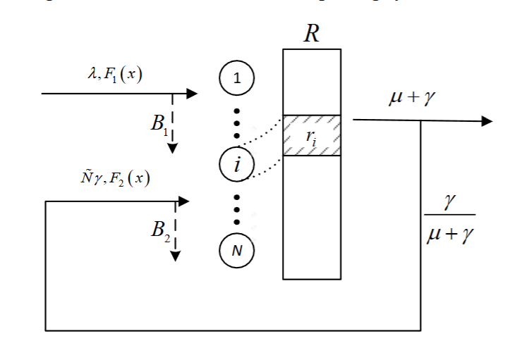
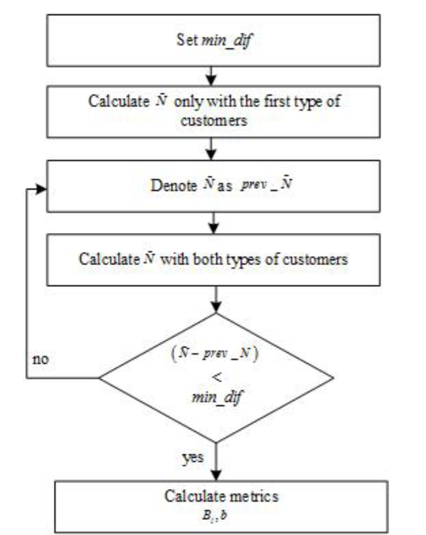
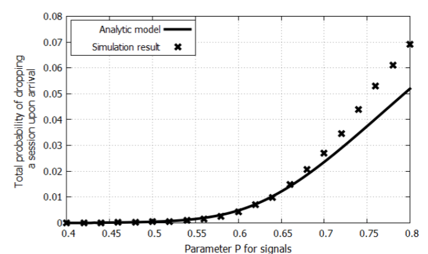
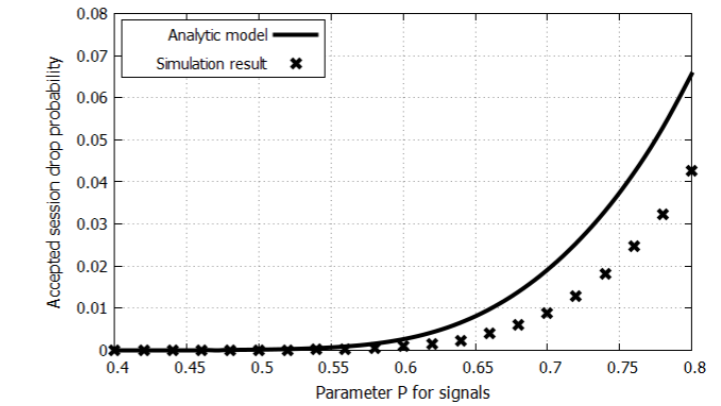
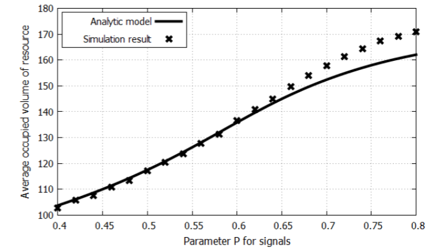

Эдуард Сопин, Кирилл Агеев, Константин Самуйлов*†**
† Институт проблем информатики †,
Федеральный исследовательский центр
«Информатика и управление»
ул. Вавилова, Москва, 119333, Российская Федерация
Система массового обслуживания, ограниченные ресурсы, случайные требования, анализ производительности, имитационное моделирование.
Системы массового обслуживания с ограниченными ресурсами, в которых заявки в течение обслуживания требуют не только устройство, но и некоторый объём ограниченного ресурса, доказали свою эффективность при анализе производительности современных беспроводных сетей. Однако использование таких систем массового обслуживания приводит к сложным вычислениям. В данной работе предлагается метод приближённого анализа систем массового обслуживания с ограниченными ресурсами и сигналами, которые инициируют перераспределение ресурсов заявок. Результаты приближённого анализа сравниваются с результатами имитационного моделирования исходной модели.
Системы массового обслуживания с ограниченными ресурсами и сигналами могут использоваться для анализа производительности современных беспроводных сетей [1, 2]. Поступление сигнала означает, что заявке требуется иной объём ресурсов. При поступлении сигнала заявка покидает систему и немедленно возвращается в неё снова, но уже с новыми требованиями к ресурсам.
Аналитические вычисления вероятностных характеристик ресурсной системы массового обслуживания с сигналами в случае пуассоновского входного потока представлены в [3, 4, 5]. Применение таких аналитических формул для вычисления стационарных характеристик оказывается довольно сложным, поскольку требует вычисления множественных свёрток функции распределения требований к ресурсам, и с увеличением размерности системы время вычислений также возрастает.
Аналитические вычисления для таких систем требуют значительных вычислительных ресурсов, поэтому в [6, 7] нами был разработан инструмент имитационного моделирования систем массового обслуживания с ограниченными ресурсами и сигналами.
Использование средств имитационного моделирования позволило уменьшить нагрузку на вычислительные ресурсы при расчётах вероятностно-временных характеристик.
В данной работе предлагается рассмотреть приближённый метод вычисления стационарных характеристик модели. Кроме того, проводится сравнение точности вычислений с методами, предложенными в [3, 4].
Остальная часть статьи организована следующим образом. В разделе II кратко описывается система массового обслуживания с ограниченными ресурсами и сигналами, в разделе III — приближённый метод анализа рассматриваемой модели. В разделе IV выполняется численная оценка приближённого метода, а результаты сравниваются с имитационным моделированием. Раздел V содержит выводы.
Рассмотрим многоканальную систему массового обслуживания с N обслуживающими приборами, в которую поступающая заявка занимает не только один прибор, но и некоторый объём ограниченного ресурса. Общий объём ресурса в системе равен R, а объёмы ресурсов, требуемых заявками, являются независимыми одинаково распределёнными случайными величинами с функцией распределения F₁(x). Далее предполагается, что ресурсы дискретны. В случае непрерывных требований к ресурсам можно использовать алгоритм упрощения, описанный в [5].
Заявки поступают согласно пуассоновскому процессу с интенсивностью λ, а времена обслуживания имеют экспоненциальное распределение с параметром μ. Каждая заявка в системе порождает поток сигналов. Сигналы поступают согласно пуассоновскому процессу с интенсивностью γ. Когда поступает сигнал, заявка освобождает прибор и занятые ресурсы, а затем снова поступает в систему с новыми требованиями к ресурсам, имеющими функцию распределения F₂(x). Следовательно, заявки покидают систему с интенсивностью μ + γ и возвращаются обратно с вероятностью γ/(μ + γ).
Пусть $\xi(t)$ — число заявок в системе в момент времени $t > 0$, а $\gamma(t) = (\gamma_1(t), \ldots, \gamma_{\xi(t)}(t))$ — вектор занятых ресурсов каждой заявкой. Если $\xi(t) = 0$, то вектор $\gamma(t)$ пуст. Поведение системы описывается стохастическим процессом $X(t) = (\xi(t), \gamma(t))$ на множестве состояний
$$ S = {(n, r_1, \ldots, r_n): 0 \le n \le N, r_i \ge 0, \sum_{i=1}^n r_i \le R}. $$
На рисунке 1 показана схема системы массового обслуживания.

Рисунок 1. Схема ресурсной системы массового обслуживания
В работе [4] для этой системы были получены система уравнений равновесия и стационарные вероятности с использованием матрично-геометрических методов. С увеличением пространства состояний растёт и размерность матрицы генератора, из-за чего вычисления в системах реального масштаба становятся слишком сложными. В следующем разделе мы пытаемся решить эту проблему с помощью приближённого метода.
Предположим, что заявки, повторно поступающие после сигнала, образуют новый тип заявок с интенсивностью $\tilde{N}\gamma$, где $\tilde{N}$ — среднее число заявок в системе. Обозначим $L = 2$ как множество типов заявок.
Предположим, что требования к ресурсам не зависят от процессов поступления и обслуживания.
Обозначим через $p_{l_k, r_k}$ вероятность того, что $k$-я заявка типа $l$ потребует $r_{l_k}$ ресурсов, а через $p_{l, r_i}$ — вероятность того, что заявка типа $l$ потребует $r_l$ ресурсов. Тогда $p_{l,r_l}^{(k_l)}$ — вероятность того, что $k_l$ заявок типа $l$ потребуют $r_l$, где $p_{l,r_l}^{(k_l)}$ является $k$-кратной свёрткой вероятностей $p_{l,r_l}$.
Обозначим $\rho_1 = \lambda/(\mu + \gamma)$ — предложенную нагрузку для заявок первого типа, и $\rho_2 = \tilde{N}\gamma/(\mu + \gamma)$ — предложенную нагрузку для заявок второго типа. Согласно [5], можно объединить предложенные нагрузки:
$$ p_r = \sum_{l=1}^L \frac{\rho_l}{\rho} p_{l,r_l}, $$
где $\rho = \sum_{l=1}^L \rho_l$, и вычислить стационарные вероятности следующим образом:
$$ q_{k,r} = q_0 \cdot \frac{\rho^k}{k!} \cdot p_r^{(k)} \tag{1} $$
где $p_r^{(k)}$ — $k$-кратная свёртка вероятностей $p_r$.
$$ q_0 = \left( \sum_{k=0}^N \sum_{j=0}^R \frac{\rho^k}{k!} p_j^{(k)} \right)^{-1}. \tag{2} $$
Формула (2) задаёт нормировочную константу $G(n, r)$. В работе [5] мы разработали рекуррентный алгоритм для вычисления этой нормировочной константы:
$$ G(n, r) = G(n-1, r) + \frac{\rho}{n} \sum_{i=0}^r p_i \bigl( G(n-1, r-i) - G(n-2, r-i) \bigr), \quad 2 \le n \le N \tag{3} $$
с начальными значениями:
$$ G(1, r) = 1 + \rho \sum_{j=0}^r p_j, \quad 0 \le r \le R. \tag{4} $$
Также в [5], имея нормировочную константу $G(n, r)$, мы вывели формулы для вероятности блокировки $B$, среднего числа занятых ресурсов $b$, а также вероятности блокировки заявок типа $l$, обозначенной $B_l$:
$$ B = 1 - G^{-1}(N, R) \sum_{j=0}^R p_j G(N-1, R-j). \tag{5} $$
$$ B_l = 1 - G^{-1}(N, R) \sum_{n=0}^{N-1} \frac{\rho^n}{n!} \sum_{j=0}^R \sum_{i=0}^j p_{l,i} p_{j-i}^{(n)} = 1 - G^{-1}(N, R) \sum_{j=0}^R p_{l,j} G(N-1, R-j). \tag{6} $$
$$ b = R - G(N, R)^{-1} \sum_{j=1}^R G(N, R-j). \tag{7} $$
В нашей модели предложенная нагрузка для заявок второго типа зависит от $\tilde{N}$, поэтому её можно вычислить по формуле ниже, снова используя нормировочную константу:
$$ \begin{aligned} \tilde{N} &= \sum_{n=1}^N \sum_{r=0}^R n q_{n,r} \ &= q_0 \sum_{n=1}^N n \frac{\rho^n}{n!} \sum_{r=0}^R p_r^{(n)} \ &= q_0 \rho \sum_{n=1}^N \frac{\rho^{n-1}}{(n-1)!} \sum_{r=0}^R p_r^{(n)} \ &= q_0 \rho \sum_{n=0}^{N-1} \frac{\rho^n}{n!} \sum_{r=0}^R p_r^{(n+1)} \ &= q_0 \rho \sum_{n=0}^{N-1} \frac{\rho^n}{n!} \sum_{r=0}^R \sum_{j=0}^r p_j p_{r-j}^{(n)} \ &= q_0 \rho \sum_{n=0}^{N-1} \frac{\rho^n}{n!} \sum_{j=0}^R p_j \sum_{r=j}^R p_{r-j}^{(n)} \ &= q_0 \rho \sum_{j=0}^R p_j \sum_{n=0}^{N-1} \frac{\rho^n}{n!} \sum_{r=0}^{R-j} p_r^{(n)} \ &= q_0 \rho \sum_{j=0}^R p_j G(N-1, R-j). \tag{8} \end{aligned} $$
На рисунке 2 показан алгоритм приближённого вычисления характеристик производительности. Перед началом необходимо задать $min_dif$ — порог точности для среднего числа заявок $\tilde{N}$. В начале приближённого расчёта рассматриваются только заявки первого типа. Вычисляется $\tilde{N}$ для заявок первого типа и обозначается как $\tilde{N}{\text{prev}}$. Имея $\tilde{N}$, можно вычислить входные параметры для заявок второго типа и затем вычислить $\tilde{N}$ уже для двух потоков заявок с интенсивностями $\lambda$ и $\tilde{N}{\text{prev}} \gamma$.
На следующем шаге разность между $\tilde{N}$ и $\tilde{N}_{\text{prev}}$ сравнивается с порогом точности $min_dif$. Если разность меньше $min_dif$, вычисляются вероятность блокировки вновь поступающих заявок $B_1$, вероятность блокировки заявок второго типа $B_2$ и средний объём занятых ресурсов $b$. Иначе выполняется возврат к вычислению $\tilde{N}$ с новой интенсивностью второго потока.

Рисунок 2. Блок-схема алгоритма приближённого расчёта
Заметим, что вероятность блокировки заявок второго типа можно интерпретировать как вероятность того, что поступление сигнала приводит к потере заявки. Однако в большинстве практических случаев вместо этого требуется вероятность $B_3$, что заявка будет завершена до корректного окончания обслуживания:
$$ B_3 = \frac{\gamma \tilde{N} B_2}{\lambda (1 - B_1)}. \tag{9} $$
В этом разделе мы сравниваем результаты приближённого метода с результатами имитационного моделирования. Положим число устройств N = 100, число ресурсов R = 200, а интенсивности равными λ = 50, μ = 1, γ = 5. Для требований к ресурсам использовалось геометрическое распределение с параметром P_l для каждого типа заявок: P₁ = 0.75 для вновь поступающих заявок и P₂ ∈ [0.4; 0.8] для вторичных заявок.
Результаты моделирования сравнивались с вычислениями по формулам (5)–(7), где характеристики системы массового обслуживания получались с использованием геометрической функции распределения и формул (5)–(7) для дискретных требований к ресурсам (рисунки 3, 4, 5).
Можно заметить, что разность между аналитическими и имитационными результатами увеличивается с ростом среднего объёма требуемых ресурсов после поступления сигнала. Основная проблема связана со способом генерации сигналов. Если в исходной модели при поступлении сигнала заявка освобождает занятые ресурсы и один прибор, то этот процесс гарантирует наличие некоторого свободного объёма ресурса и одного прибора для данной заявки, поскольку она возвращается немедленно с новыми требованиями к ресурсам. Но в нашей приближённой модели заявки второго типа могут не увидеть свободных ресурсов при поступлении. Поэтому приближённый подход даёт верхнюю границу для вероятности блокировки принятых заявок.

Рисунок 3. Вероятность блокировки новых заявок

Рисунок 4. Вероятность блокировки принятых заявок

Рисунок 5. Средний занятый объём ресурсов
В статье описан приближённый подход к анализу стационарных характеристик системы массового обслуживания с ограниченными ресурсами и сигналами. Этот метод может использоваться для оценки характеристик производительности современных беспроводных сетей.
В дальнейшей работе планируется реализовать более точный анализ аналитической модели с сигналами.
Публикация подготовлена при поддержке программы «РУДН 5-100» и профинансирована РФФИ в соответствии с исследовательскими проектами № 18-07-00576, 19-07-00933.
[1] Lu X., Sopin E., Petrov V., Galinina O., Moltchanov D., Ageev K., Andreev S., Koucheryavy Y., Samouylov K., Dohler M. Integrated Use of Licensed-and Unlicensed-Band mmWave Radio Technology in 5G and Beyond. IEEE Access, preprint.
[2] Galinina O., Andreev S., Turlikov A., Koucheryavy Y. Optimizing Energy Efficiency of a Multi-Radio Mobile Device in Heterogeneous Beyond-4G Networks, Performance Evaluation, vol. 78, 2014, pp. 18–41.
[3] Tikhonenko O. Generalized Erlang problem for service systems with finite total capacity. Problems of Information Transmission, 41(3), 2005, pp. 243–253.
[4] Sopin E., Vikhrova O., Samouylov K. LTE network model with signals and random resource requirements, Proc. of 9th International Congress on Ultra Modern Telecommunications and Control Systems and Workshops (ICUMT), 2017, pp. 101–106.
[5] Sopin E.S., Ageev K.A., Markova E.V., Vikhrova O.G., Gaidamaka Yu.V. Performance Analysis of M2M Traffic in LTE Network Using Queuing Systems with Random Resource Requirements, Automatic Control and Computer Sciences, 2018, vol. 52, no. 5, pp. 345–353.
[6] Eduard Sopin, Kirill Ageev, Sergey Shorgin. Simulation Of The Limited Resources Queuing System For Performance Analysis Of Wireless Networks, Proceedings of the 32nd European Conference on Modelling and Simulation, 2018, pp. 505–509.
[7] Eduard Sopin, Kirill Ageev. Simulation Of The Limited Resources Queuing System Include Signal Event For Performance Analysis Of Wireless Networks, Proceedings of the 10th International Congress on Ultra Modern Telecommunications And Control Systems, 2018.
ЭДУАРД СОПИН получил степени бакалавра и магистра по прикладной математике в Российском университете дружбы народов (РУДН) в 2008 и 2010 годах соответственно. В 2013 году получил степень кандидата наук по прикладной математике и информатике. С 2009 года работает в РУДН, в настоящее время — доцент кафедры прикладной информатики и теории вероятностей. Его научные интересы связаны с анализом производительности современных беспроводных сетей и облачных/туманных вычислений. Электронная почта: sopin-es@rudn.ru.
КОНСТАНТИН САМУЙЛОВ получил степень PhD в МГУ и степень доктора наук в Московском техническом университете связи и информатики. С 2014 года он является заведующим кафедрой прикладной информатики и теории вероятностей РУДН. Автор более 150 научно-технических публикаций и трёх книг. Его научные интересы включают анализ производительности сетей 4G (LTE и WiMAX), телетрафик сетей triple play, планирование сигнализации и облачные вычисления.
КИРИЛЛ АГЕЕВ родился в Актобе, Казахстан, обучался в Российском университете дружбы народов, где получил степень в области компьютерных наук в 2017 году. В настоящее время является аспирантом кафедры телекоммуникаций и информатики. Электронная почта: ageev-ka@rudn.ru.